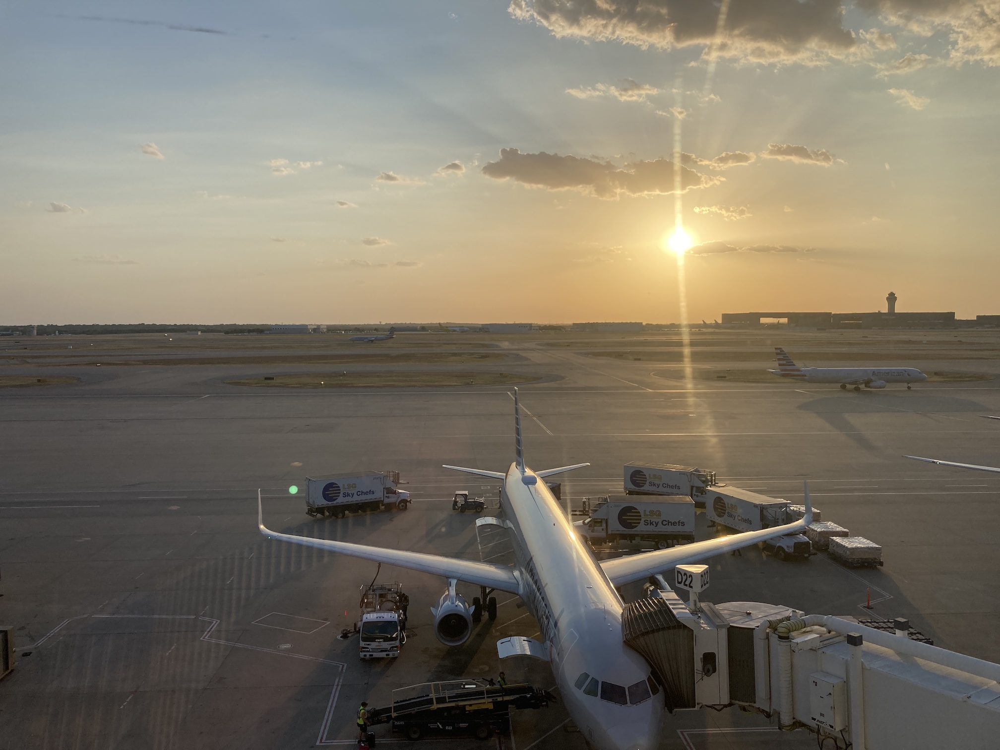
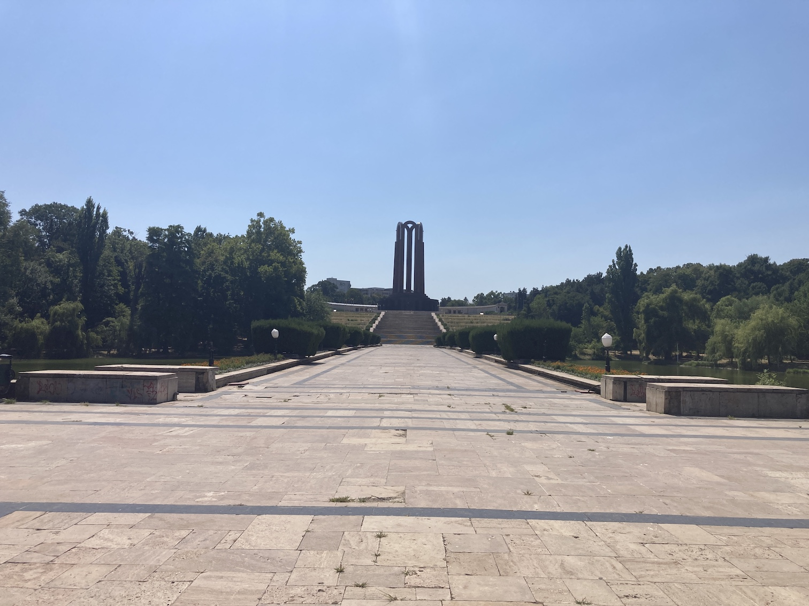
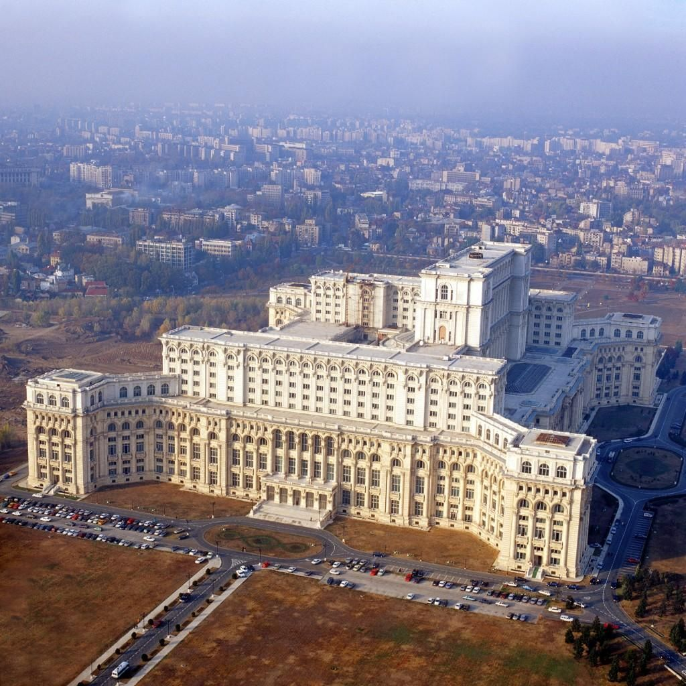
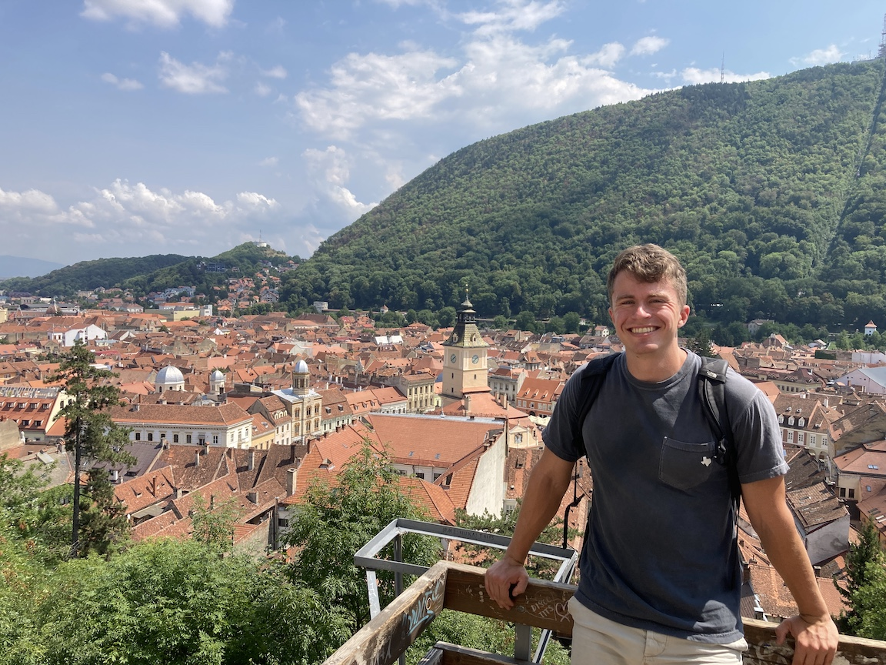
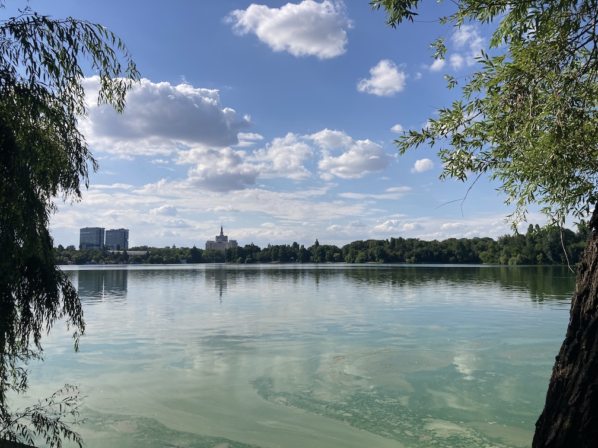

Bucharest trip report from 05-14 August 2022, including summaries of the days, thoughts, considerations, and suggestions.
I knew weather in New York City (home of the airport I was flying into) was questionable, but I didn't think that no rain nor thunderstorms was enough to prevent flights from coming in! Apparently ATCs did, though, and ordered later flights to NYC canceled. I was hanging out in the Capital One DFW lounge when I got the notification. I quickly headed to the American Airlines customer service counter to beat the inevitable crowd of irked travelers, getting there about five minutes before the onslaught. The agent was able to get me on a flight to Pittsburg, followed by a connection to JFK, getting there about two hours before my JFK-Doha flight.
I headed back to the COL to continue gorging on food and sparkling waters—vacation diet was starting much earlier than expected! I pulled out my Kindle and read Baoshu's Redemption of Time until boarding time. I made an awkward bed in Pittsburg, laying out on the edge of five seats under the arm rests. Surprisingly comfortable using my carry-on as a pillow!
The flight to Doha was 12 hours, but felt much shorter than I was anticipating, probably due to the vast movie selection on the in-flight entertainment system. They had probably 100+ movies: some old, some new; some kids, some adults; some comedy, some action; some short, some long. Something for everyone! I watched Uncharted, Get Out, and Lara Croft: Tomb Raider (2001). In between movies I read and attempted to sleep. The food was also excellent. I got two pretty delicious meals that were filling and well-timed. I even got another meal on the flight to Bucharest!
I landed, made my way through Romanian customs, and bought a train ticket. Just as I was walking to get on, the door closed, leaving me to wait quite a bit for the next one... until a native went up, pressed the green button on the outside of the door, and voila! it opened right up. Love it. My one-on-one and travel partner, A, met me at the train station so we could go back to the apartment together.
Food that night was at verv kitchen, a local vegan restaurant. We both got "veggie curry with basmati rice: basmatic rice, seasonal veggies, onion, coconut milk, garlic, ginger, spices". Excitement of being in Europe staved off sleepiness, so we made our way to Old Town and the center of Bucharest, stopping at Caru' cu bere, a pretty well-known Romanian restaurant. I got a vegetable salad, bread, țuică, and a beer.
Day 4 began with a latte and plum pastry from Ivy, a coffee shop just around the corner from our apartment. Fun fact: as of 2012, plums cover 37.65% of total fruit acreage in Romania and are used in traditional Romanian foods and drinks, like țuică/pálinka and papanaşi (plum donuts).
With stomachs filled and caffeine coursing through our veins, we headed to Grădina Cișmigiu to walk amongst the statues and trees. Noted later on, but this was the first encounter with the fact that Romania seems to love putting statues/busts of various people in their parks—I don't think there was a single park we went to that didn't have at least 10 of them!
The central library was close enough and seemingly interesting to walk to, but we were rejected with a harsh "închis" from a non-English speaker, which upon some Google Translate guesses gave us the obvious answer: closed. (While writing this, it seems we may have tried the wrong entrance...)
The next statue-filled park we went to was Parcul Carol I. A smooth, wide paths goes straight down the center leading to the Nation's Heroes Memorial, a closed-to-the-public (we got a "no" instead of "închis" this time) mausoleum dedicated to important Romanian communists. Lush forests and paths with embedded restaurants and refreshment stands line the exterior.
Lunch was at the nearby B3TON RESTOBAR: I had a burger and a few beers. The inexpensiveness of the country was quickly beginning to set in.
The Palace of the Parliament was the obvious choice for our next stop. Fun fact #2: it's the heaviest building in the world at a colossal four billion kilograms! The list of materials uses is just as big:
Among the materials are 3,500 tonnes of crystal – 480 chandeliers, 1,409 ceiling lights and mirrors were manufactured; 700,000 tonnes of steel and bronze for monumental doors and windows, chandeliers and capitals; 1,000,000 cubic metres (35,000,000 cu ft) of marble,[36] 900,000 cubic metres (32,000,000 cu ft) of wood[37] (over 95% domestic) for parquet and wainscotting, including walnut, oak, sweet cherry, elm, sycamore maple; 200,000 square metres (2,200,000 sq ft) of woolen carpets of various dimensions (machines had to be moved inside the building to weave some of the larger carpets); velvet and brocade curtains adorned with embroideries and passementeries in silver and gold.
Dinner was at Calderon 18, a nearby (to our apartment) wood-fire pizzeria. I got a simple margherita and two gin drinks. It was that night that we finally found out Romanian customs towards bringing the check: they only do so when you ask. We waited. And waited. And waited some more. Finally we asked for the check, and then asked why they don't bring it immediately. The answer? The waiter doesn't want to make the diners feel rushed, which makes a lot of sense to me! Plus one for Romanian culture. I was craving some sweets, so we stopped by a Fadel for baklava with walnuts. I may or may not have had 15 pieces before crashing for the night.
We met out tour guide promptly at 7:45am and got started on the 1.5-hour drive out to Peleș Castle. There were nine of us in the car: myself, A, O (tour guide), and a Romanian family of five (plus one of their friends from London): C, F, O, A, M, A.
The castle was awe-inspiring. Started in 1873 and finished in 1914, there are over 170 rooms, including an armory consisting almost entirely of gifts from foreign governments, a smoking room (with Queen Elisabeth being the only woman allowed in there), and secret passageways. What struck me most was the intricate woodwork: almost every room had wood that had obviously taken significant time to form. The grounds were equally as beautiful. A gap in the trees exposed the rolling, tree-covered Transylvanian hills from the terrace, and cobblestone roads leading to and further on from the castle were nicely shaded with trimmed shrubs on either side. And yes, there were statues.
Next up was Brașov, an obvious stop between Peleș and Bran castles. The city had significant German influence according to our tour guide, and this was confirmed by a group member who had spent a lot of time in Germany: "this feels very German to me!" If that's the case, then I really want to go to Germany. The atmosphere was relaxed and comfortable, the historic district very walkable with restaurants galore, the architecture simple yet nice. We ate at La Ceaun in the main square: I got mici (pronounced "meech") at our Romanian friends' suggestion, a staple Romanian dish consisting of ground beef, ground pork, and spiced formed together into a sausage shape. We also got Papanași for dessert. We had 45 minutes on our own, so A and I ventured up the steep hill to Turnul Alb, a medieval watchtower overlooking the historic district (with a perfect view of Brașov's Hollywood sign).
Onward to Bran Castle! A 10-minute walk from parking to the castle's entrance gave us a taste of how much the small town of Bran relies on tourism (and the legend of Dracula). Both tourists and vendors were abundant, selling all types of things from jewelry to shirts to baked goods. Side note/tip: buy tickets online before going and you can skip the 100+ person line. We were able to go straight to the castle's entrance uninterrupted. The castle is much less impressive than Peleș and has a much more boring history. While popularized by the legend of Dracula (who is based on Vlad Dracula, also known as Vlad the Impaler), no evidence suggested Vlad ever went to Bran Castle and Bram Stoker's description of the castle doesn't match Bran. Still can't blame the not-so-wealthy Romanians for latching onto the money-making opportunity. The castle was bland and spent a pretty good amount of time talking about Bram Stoker (again, can't blame them).
The drive back was almost double the drive-there time due to traffic. I spent most of it talking to our guide about Romanian vs. U.S. culture, his experiences with communism as a child, and a host of other topics.
Dinner was at (cannot remember the name for the life of me) and included a bowl, beer, and two canolis.
The National Museum of Art has three separate permanent exhibits: Romanian art, European art, and a glimpse into palatial interior design. The Romanian art section is extensive, covering four floors and complete with paintings, statues, woodwork, and textiles. Portraits, landscapes, religious topics, etc. It's got it all. The European art is the same, but obviously diverts from the regular Orthodox theme. The palatial exhibit was extremely well done: I believe it was converted to a museum (or rather, they just removed all the furniture and started charging people to come in to gawk at the ceiling murals and architecture).
After the museum we went to a so-called "secret" metro station, Piata Romana. Originally planned and ready for construction, Elena Ceaușescu shot it down to help out the working class:
The engineers weren’t as shocked to hear criticism from the dictator’s wife who was known for coming up with her own farfetched theories as an illiterate scientist. Elena complained that the working class and the youth of Bucharest had “started to get fat” and “needed to walk more” and “there are too many stations, stop them!”.
Yet they only scrapped it on paper, and for that, I thank them. (We ended up taking the metro from Piata Romana a couple of times.) Pretty cool riding an old Communist metro line!
We whet our dinner appetites with a visit to Cărturești Carusel. Standing five floors tall, it has books primarily in Romanian, but still offers a large English catalog. The bottom floor is devoted to alternative media: board games, music (CDs and vinyl), movies, posters, and anime-related items. There's truly something for everyone here. The top floor is a cafe, but we didn't visit.
Dinner was at Hanu' lui Manuc, a beer garden-esque restaurant in south Old Town, which was wonderful: soft live music, string lights running the length of the courtyard, the dull buzz of lively conversations.
The National Museum of the "Dimitrie Gusti" Village is a must-see for anyone visiting Bucharest, unless you're Romanian, but even then, you should still probably check it out. It features dozens of buildings taken from historic Romania and reconstructed in the museum grounds. These range from basic homes to churches to storehouses. And it's not just the outside: the inside is decorated in accordance to how the people lived. Each building has a short description (in both Romanian and English) outside the front explaining where the building is from, its function, and some extra "fun" details. I purchased some Horezu ceramic plates for my brother/sister-in-law and mother and a Orthodox painting for my home.
Lunch was had at the lakeside Restaurant Pescăruș and consisted of pork shoulder over mashed potatoes, bread, beer, and five scoops of different ice cream flavors. Yum. This restaurant had something warm and inviting and cozy about it that's hard to put into words. The light was teetering on the edge of golden, uninterrupted by clouds, flooding into the courtyard and bathing it in a yellow hue. The weather was slightly above lukewarm, but the occasional breeze was welcome and enjoyable. The volume was quiet, with families and professionals alike enjoying social time with their friends or loved ones alongside a simple lunch. This was it! This is what I was looking for. I don't remember the last time I had this in the U.S. I go out with friends, I eat at restaurants, the same sun shines in Texas, but there was just something different about this.
We walked along the lake before taking a scenic detour back to our apartment through the diplomatic section of the city, or so I call it. Embassies were abundant, and nestled amongst them was Primaverii Palace", the "opulent 80-room former residence of Romanian president Ceausescu, built in 1964, with lush gardens". The atmosphere on the walk home was similar to the restaurant for almost identical reasons. Romanians walking relaxedly to and fro, smiles on their faces being illuminated in the afternoon sunlight.
I sought out saramură at the suggestion of one of the Transylvania co-travelers, so we ventured to Torna Fratre, where I downed two glasses of gin in between the bone-in fish. When I asked if they had saramură, the waitress looked at me like I had asked if they had food. "Of course", she answered with a hint of scorn.
One Bucharestian (not sure about the rest of Romania) fast food place is Luca. They offer pizza, some basic breakfast pastries, and the standard coffee selection. It looked good upon first glance, and the line was often long, but quickly after getting two apple strudels I learned why the line is long: like McDonald's, the food isn't that great, but damn, is it convenient!
The
• Luca • Natural history museum • Lunch with craft beer • Bought souvenirs • Dinner at Verona • Haircut Beers/drinks out (shoutout cousin andrew)